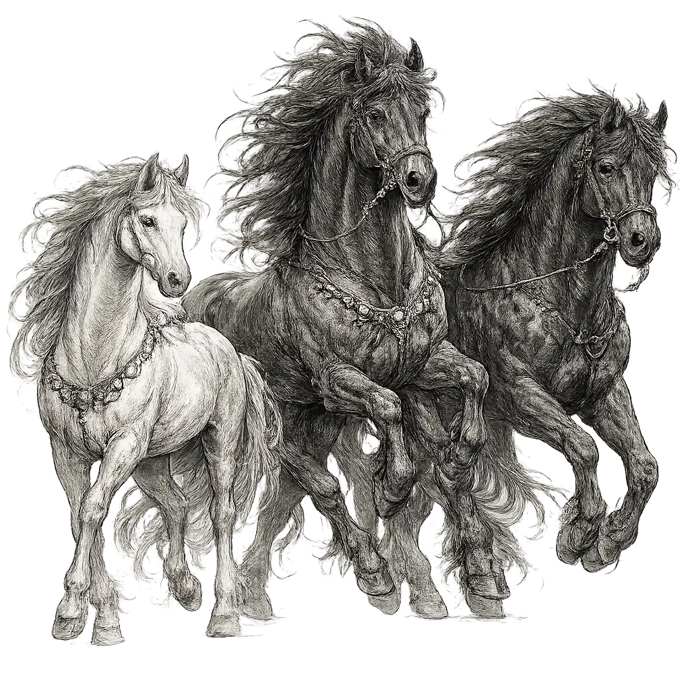

افسانه Sleipnir
قسمت ۱
زمانی که درباره داستان Sleipnir میخونی. از طرفی هم تمام فیلمها و سریالهای مارول رو به یاد مییاری کلی این داستان آدم رو سوپرایز میکنه و بعد میفهمی که خیلی اوضاع فرق میکنه. حالا همه میدونن لوکی خدای شرارت هست. به طور خلاصه داستان Sleipnir اینطوری که:
Loki shapeshifted and turned himself into an alluring female horse to draw Svaðilfari away from helping the master builder complete Asgard's fortifications. When they were together, Loki and Svaðilfari mated. Loki subsequently became pregnant and gave birth to Sleipnir.
حالا سوال بعدیای که ایجاد میشه... این هست که چرا طبق گفته این متن لوکی میخواسته جلوی ساخت قلعهی آزگارد رو بگیره.
According to the myth, the giant approached the gods and offered to build a wall around Asgard in exchange for the goddess Freyja's hand in marriage and safety for the duration of his work. The gods hesitated but were ultimately convinced by Loki to agree to the deal, but on the condition that the giant must complete the wall in a single winter with no help from anyone but his trusty stallion Svadilfari.
پس عملا یه غول میخواسته با فریا ازدواج کنه و برای اینکه بتونه اینکار رو بکنه پیشنهاد ساخت دیوار رو داده. جالبیش اینکه لوکی کسی بوده که بقیه رو راضی کرده که باهاش موافقت کنن به شرطی که این دیوار رو توی یک زمستون بسازه و از هیچکش جز Svalifari کمک نگیره.
The giant, confident in his abilities, agreed to the deal and began to work on the wall. However, as the winter wore on, it became clear that the giant would be able to complete the wall on time with Svadilfari doing twice the work of the giant. The gods began to worry about what would happen if the giant were to marry Freyja and gain access to Asgard.
بعد غول که قبول کرد. دیدن زمستون رسید و خداها دیدن عه این داره دیوار رو تموم میکنه. بعد نگران شدن که اگه فریا رو بدن غول میتونه بیاد توی آزگارد. بحث نژادپرستیه انگار! بعد تنها دلیلی که داشتن به موقع جلو میرفتن این بود که این Svalifari دوباره غول داشت کار میکرد.
In their desperation, the gods turned on Loki for a solution threatening him with death for giving them such poor advice. Loki, always cunning and quick-witted, came up with a plan to help the gods out of their predicament. He transformed himself into a mare and lured the giant's powerful stallion away from the wall. This caused the stallion to run off after Loki, causing the giant waste time chasing after his beast of burden.
بقیه خداها هم این وضعیت رو دیدن رو به لوکی گفتن:«به اودین قسم! اگر این به موقع تموم کنه، بخاطر پیشنهاد بدی که دادی جرت میدیم» بعد لوکی خودش رو شبیه یه اسب ماده میکنه و Svalifari رو اغفال میکنه و باعث میشه که از کار دیوار فاصله بگیره. اون غول هم دنبالشون میکنه ولی مگه میتونست بگیره. برای همین کلی وقت غول رو تلف میکنن.
As the winter drew to a close, the giant was unable to complete the wall on time, and the gods claimed victory. However, the giant still demanded compensation for his failed work. The gods, unbound from their deal and promise, were not merciful – they deemed a blow from Thor’s hammer to be an appropriate payment for the unlucky giant.
زمستون که داشت به انتهاش میرسید. این دیوار هنوز تموم نشده بود. بنظر هم میرسید که نمیتونست کاری کنه. با اینحال غول میگفت:«اوی لاشیا!!! من خسارتی که بهم وارد شده رو میخوام.» اونا هم گفتن:«بیه!!!! اون رحمی که میتونیم بهت بکنیم اینکه با پتک تور یه ضربه بزنیم که بمیری.» [لاشیا]
Meanwhile, deep in the forest, the giant’s stallion Svadilfari caught up with Loki who was still shapeshifted into a mare. The two copulated, and soon after completion of the wall Loki gave birth to Sleipnir, the legendary eight-legged steed of Odin. Being the offspring of such an unusual union perfectly explains Sleipnir's mythical abilities and further exemplifies the consequences stemming from Loki's tricks.
بعد این Svadlifari و لوکی میشینن رابطه برقرار میکن. لوکی هم توی ده دقیقه یهو یه بچه پس میده. و اونجا اسب افسانهای Sleipnir با ۸ تا پا به دنیا مییاد که در نهایت هم میشه اسب اودین. بعد این اسب هر بنی بشری توی آب و زمین سریعتر بود.